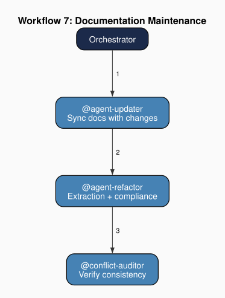

Chapter 12: The Agent Updater
Part III: The Agents at Work
Purpose: You synchronize agent documentation after changes in the book project. When chapters are added, the bibliography changes, the project structure evolves, or reference files are updated, you update all affected agent files to reflect the current state.
1. The Change-to-Agent Impact Matrix
When a file in the project changes, the change may affect one agent's documentation, several agents' documentation, or none. A documentation-maintenance agent maintains a change-to-agent impact matrix: a mapping from categories of project changes to the agent files that must be updated in response. A new source file may affect a navigation agent's project map, a consistency auditor's scope, and a domain expert's inventory. A new entry in a reference database may affect a bibliography agent's verified-keys list and the outlines reference file. A structural change to an agent file's workflow section may affect the team coordinator's routing table and any document that describes that workflow.
In the book-production team, these propagation paths take concrete form. A new chapter file added to html/chapters/ affects the navigator's project map, the conflict-auditor's scope (one more file to scan), and the book-content-expert's chapter inventory. A new entry in the bibliography database affects the bibliography-manager's verified-keys list and potentially the chapter outlines reference file. A structural change to an agent file's workflow section affects the orchestrator's routing table and any chapter that describes that workflow.
The impact matrix is the updater's core data structure. Without it, documentation updates rely on ad hoc assessment of which files are affected by a given change: a heuristic process prone to omission. The matrix makes the propagation paths explicit: for each type of change, which agent files need review? It does not determine what the update should contain (that depends on the specific change), but it determines where updates are needed. Identification of impacted files is the updater's first-order contribution; the actual edits to those files are its second-order contribution.
The impact matrix is itself subject to maintenance. When new agents are added to the team, the matrix gains new rows and columns. When an agent's scope expands to include a new file type, the matrix must be updated to reflect the new dependency.
In the book-production team, this occurs in Workflow 2 (Chapter Expert Instantiation), where newly created chapter-expert agents expand the matrix. The self-referential property is described in Chapter 8.
2. The Propagation Chain
A documentation-maintenance agent does not operate in isolation. Its updates trigger a verification sequence. After the updater modifies agent documentation, a structural auditor checks the modified files for specification compliance and extraction opportunities, and a consistency auditor checks the modified files for consistency with the rest of the project. The sequence, which includes updater, then structural auditor, then consistency auditor, forms a propagation chain that ensures documentation changes are not only made but verified.
The propagation chain addresses a failure mode inherent in documentation maintenance: cascading staleness. An update to one agent file may introduce a reference to another agent file whose documentation is already stale. The initial update is correct in isolation, but the cross-reference creates a link to outdated information. The refactorer, running after the updater, checks whether the updated file's references to other files are consistent with those files' current contents. The conflict-auditor, running after the refactorer, checks whether the updated file is consistent with the chapter drafts that describe it. The chain catches errors that single-pass updates miss.
The propagation chain is specified in the team coordinator's documentation-maintenance workflow: invoke the documentation-maintenance agent, then the structural auditor, then the consistency auditor. The ordering is fixed. The updater runs first because it produces the changes that the subsequent agents verify. The chain is not recursive: if the structural auditor's compliance check or the consistency auditor's check reveals further issues, those issues are logged and addressed in a new workflow invocation, not by re-invoking the updater within the same chain. This design prevents infinite loops where the updater fixes a problem introduced by the structural auditor's fix of a problem introduced by the updater.
In the book-production team, this chain is specified in the orchestrator's Workflow 7 (Documentation Maintenance): invoke the agent-updater, then the agent-refactorer, then the conflict-auditor.

The propagation chain addresses a problem analogous to what Lachmann identifies as the complementarity problem in capital theory. Capital goods are productive not in isolation but in combination: a machine that requires a specific raw material, a compatible process, and a trained operator is rendered partially unproductive if any of its complements changes without corresponding adjustment (Lachmann 1956). Agent files are interdependent in the same way. A chapter-expert agent's specification references the orchestrator's workflow sequence; the orchestrator's routing table references the chapter-expert's slug; the conflict-auditor's scope includes the chapter-expert's output files. When the chapter-expert's specification changes, the agents that depend on it hold stale expectations about its behavior. The propagation chain restores complementarity: by updating each dependent file after a change to the source, it ensures that the team's components remain consistent complements to one another rather than autonomously diverging parts of a structure that can no longer function as a whole.
3. Invariant Core Preservation
Every agent file in the team contains an invariant core: the constitutionally entrenched section described in Chapter 4. The updater respects these markers in every file it modifies. When the impact matrix indicates that a change affects content within an agent file's invariant core, the agent flags the modification as requiring human approval rather than making the change autonomously.
Invariant core preservation is the updater's primary constitutional constraint. Without it, a cascade of documentation updates could gradually erode the boundaries that define each agent's authority, tool set, and scope. An update that seemed locally reasonable (adjusting a sentence in the security agent's scope description to match a chapter's phrasing) could weaken a constitutional guarantee if the sentence was part of that agent's invariant core. Because each modification to an agent file reshapes the preference ordering through which that agent will exercise judgment on its next invocation (§1.5), the invariant-core constraint protects the constitutional foundations of the agent's rationality from routine maintenance.
The constraint also shapes what a documentation-maintenance agent can and cannot do in response to a conflict between an agent file's invariant core and a chapter's description. If a chapter describes the orchestrator's authority hierarchy as having five tiers, and the orchestrator's invariant core defines six, the agent cannot revise the orchestrator's file to match the chapter. It can revise the chapter to match the orchestrator's file (chapter drafts have no invariant core protections) or it can flag the discrepancy for human resolution. This asymmetry reinforces the authority hierarchy: the entrenched portions of agent specifications outrank all other documentation, and the agent responsible for documentation updates respects that ranking.
4. Living Document Enforcement
The team's governing instructions include a "Living Document Policy" that applies to all agent files: no dated audit snapshots, no resolved-issue archaeology, no dated fix logs, no hardcoded state that belongs in reference files. The documentation-maintenance agent enforces this policy each time it modifies an agent file. When updating an agent file in response to a project change, the updater also scans for stale content that violates the living-document policy, which includes records of past audits, lists of previously resolved issues, timestamps from prior sessions, and removes them.
The living-document policy reflects a design judgment about what agent files should contain. Agent files encode current operating specifications. They record what the agent does, not what it once did. A security agent file that includes a log of past HALT directives confuses the agent's specification with its execution history. A conflict-auditor file that includes a count of conflicts found in a particular audit session embeds a point-in-time snapshot in what should be a timeless definition. The agent-updater strips these accretions at each maintenance pass, keeping agent files focused on present instructions.
I enforce the living-document policy aggressively. Even content that might seem useful for context ("as of the last audit, 14 conflicts were found") is removed, because the statement will be false after the next audit and no mechanism guarantees its update. Better to store audit counts in a reference file maintained by the appropriate agent than to embed them in agent files that the updater must maintain.
The same file scan that enforces the living-document policy also detects unreplaced placeholder tokens in newly instantiated agent files. A file that still contains a {MANUAL:STYLE_REFERENCE_PATH} or any other unfilled manual-required token has not completed initialization: the team-setup step that should have bound that value was not executed. The updater flags these as initialization-completeness failures and routes them to the operator for resolution. The two failure modes the scan surfaces are categorically distinct: a living-document violation reflects drift that accumulated during the project's life, while an unreplaced {MANUAL:} token reflects a gap at creation. The first is a documentation-maintenance failure; the second is an initialization-completeness failure. Both surface during the same scan; neither belongs in a file that agents depend on for current operating specifications.
In the book-production team, such reference files include the conflict-auditor's CSV log and the code-hygiene agent's violation reports: dedicated stores for point-in-time data that would otherwise clutter agent specifications.
5. Position in Production and Maintenance Workflows
A documentation-maintenance agent appears across multiple workflow types because documentation debt arises throughout the production cycle. Drafting workflows, audit workflows, dedicated maintenance workflows, cleanup workflows, and agent-creation workflows all modify the project's file structure or content in ways that require documentation updates.
In the book-production team, the agent-updater appears in five orchestrator workflows. In Workflow 3 (Chapter Drafting), it is invoked near the end to update progress tracking after a new chapter is drafted. In Workflow 5 (Code Hygiene Audit), it updates documentation after corrections are made. In Workflow 7 (Documentation Maintenance), it is the primary agent: the workflow exists to invoke the updater's full capabilities. In Workflow 8 (Cleanup), it updates documentation after files are removed. In Workflow 2 (Chapter Expert Instantiation), it registers newly created agent files in the project documentation.
The updater's presence across multiple workflows distinguishes it from single-purpose agents. The security agent activates only on specific triggers. The code-hygiene agent participates in two workflows. The conflict-auditor participates in many but always as the final step. The agent-updater participates in many workflows at various positions, from early-stage propagation to end-of-workflow documentation, because documentation maintenance is a cross-cutting concern that spans the entire production cycle.
Every workflow that modifies the project's files may create a documentation debt: agent files that no longer accurately describe the project's state. The updater discharges that debt within the workflow that created it, preventing documentation staleness from accumulating between sessions.